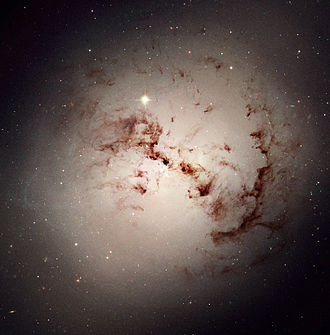

Caracteristicas
- Ausencia o insignificante momento angular
- Ausencia o insignificante cantidad de materia interestelar
- Compuestas sobre todo por estrellas antiguas
- Concentración de luz central
- Poblaciones estelares
En forma de elipse o de esferoide, se caracterizan por carecer de una estructura interna definida y por presentar muy poca materia interestelar . Se consideran las más antiguas del universo, ya que sus estrellas son viejas y se encuentran en una fase muy avanzada de su evolución.
